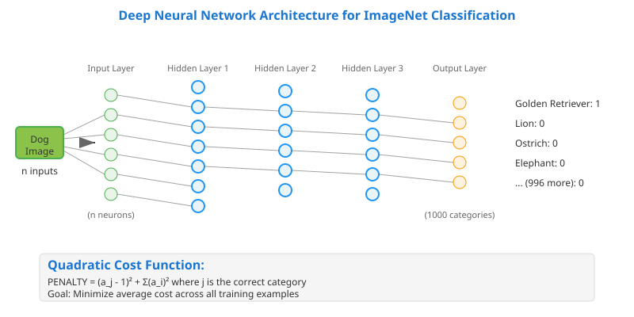
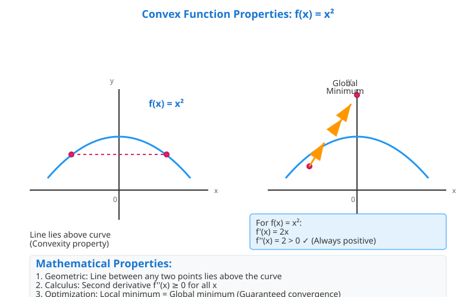
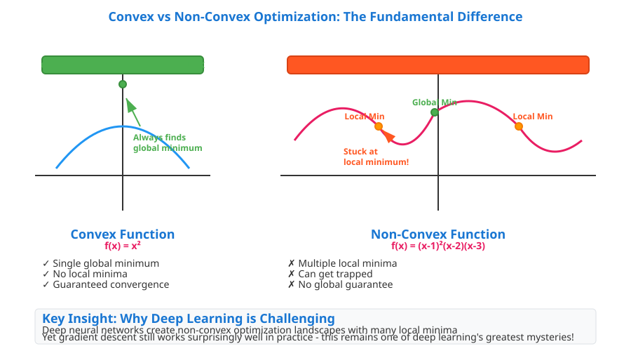
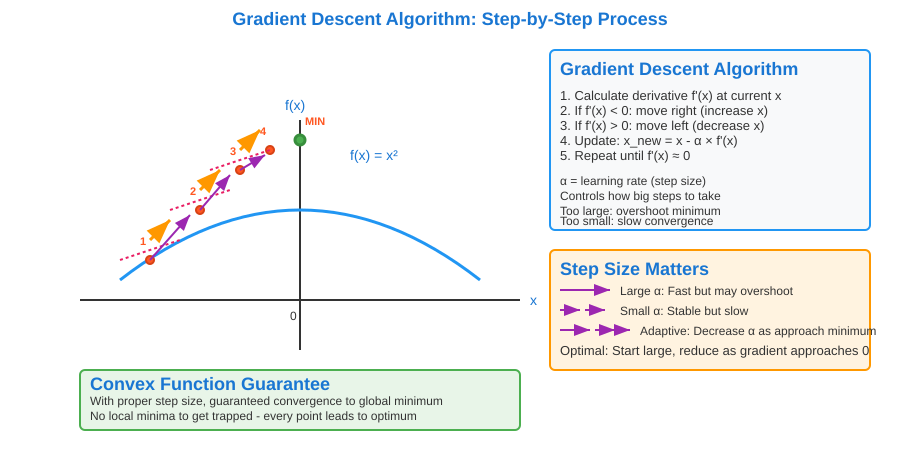
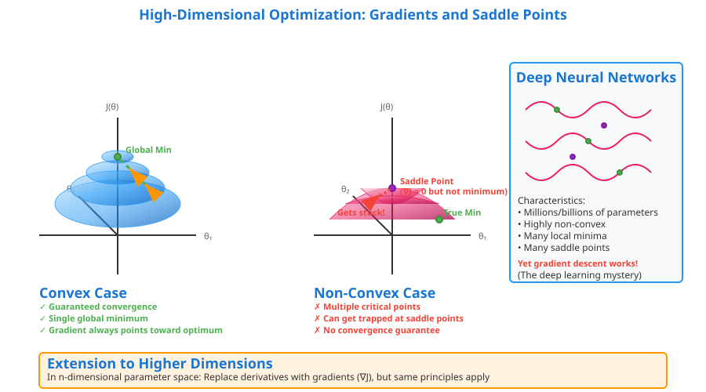

Deep Neural Network Parameter Optimization: From Convex Theory to Non-Convex Reality
📋 Quick Navigation
- 🎯 Introduction to Parameter Optimization
- 📊 Cost Functions and Performance Evaluation
- 📈 Convex vs Non-Convex Optimization
- ⚡ Gradient Descent Algorithm
- 🔍 The Deep Learning Mystery
- 📚 References & Further Reading
🎯 Introduction to Parameter Optimization
Setting the parameters (weights) of a deep neural network represents one of the most fundamental challenges in machine learning. The core objective is to cast the problem of finding good parameters as an optimization problem.

However, not all optimization problems are created equal. There exists an important distinction between:
- Convex optimization problems: Well-understood with many efficient algorithms and guaranteed convergence properties
- Non-convex optimization problems: Complex, unwieldy problems that characterize deep neural networks
The ImageNet Classification Challenge
Consider a deep neural network designed for ImageNet classification:
- Input: n-dimensional image vector
- Output: 1000 category probabilities
- Goal: Assign each image to exactly one of 1000 categories
For a dog image input, the ideal output should contain:
- 1 in the correct category (dog)
- 0 in all other 999 categories
📊 Cost Functions and Performance Evaluation
Quadratic Cost Function
To evaluate parameter quality, we can measure how far the network's output deviates from the ideal output using the quadratic cost function.
Given: - Input vector: x - True label category: J - Network output: a₁, a₂, a₃, ..., aₘ
The penalty function is defined as:
PENALTY = (aⱼ - 1)² + Σ(aᵢ)² where i ≠ j
Cost Function Properties
- Perfect prediction: Function evaluates to
0 - Incorrect prediction: Function evaluates to non-zero value
- Average cost: Computed across all training examples
- Optimization goal: Minimize average cost
Example Calculation
For a correctly predicted cat image: - aⱼ (cat category) = 1 - All other aᵢ = 0 - Penalty = (1-1)² + (0+0+...) = 0
The cost function serves as a technique for evaluating the performance of our algorithm/model. Parameters that minimize average cost on training data typically achieve low error rates on new examples.
📈 Convex vs Non-Convex Optimization
Understanding Convex Functions

A function is convex if it satisfies two key properties:
Geometric Definition
- When drawing a line between any two points on the curve, the line lies entirely above the curve
Mathematical Definition
- A function is convex if and only if its second derivative is always non-negative
Example: f(x) = x²
First derivative: f'(x) = 2x
Second derivative: f''(x) = 2 (always positive) ✓ Convex
Convex Function Advantages
Why Convex Optimization is "Easy":
- Global = Local: In convex functions, local minima are always global minima
- Guaranteed Convergence: Gradient descent algorithms are guaranteed to find the optimal solution
- No Getting Stuck: No risk of converging to suboptimal local minima
- Well-Understood Theory: Extensive mathematical framework and efficient algorithms
Non-Convex Functions: The Challenge

Example: f(x) = (x-1)²(x-2)(x-3)
Problems with Non-Convex Functions:
- Multiple Local Minima: Several points where gradient = 0
- Saddle Points: Points where gradient = 0 but not true minima
- Getting Stuck: Optimization algorithms may converge to suboptimal solutions
- No Guarantees: No theoretical guarantee of finding global optimum
⚡ Gradient Descent Algorithm
One-Dimensional Gradient Descent

Algorithm Steps:
- Calculate the derivative at current position x
- If derivative is negative: Take a step right (increase x)
- If derivative is positive: Take a step left (decrease x)
- Repeat until derivative approaches zero
- Adjust step size based on derivative magnitude
Convergence Properties
For Convex Functions: - Guaranteed Global Convergence: With proper step size selection - Optimal Solution: Always reaches the true global minimum - Predictable Behavior: Well-understood convergence rates
For Non-Convex Functions: - Local Minimum Risk: May only reach a local minimum - Saddle Point Issues: Can get stuck at points that aren't true minima - No Global Guarantee: Generally will not find the global optimum
Higher-Dimensional Extension
In higher-dimensional parameter spaces:
- Gradient Replaces Derivative: Points in direction of steepest increase
- Opposite Direction: Take steps opposite to gradient direction
- Same Principles Apply: Convex guarantees vs non-convex challenges

Saddle Points in Higher Dimensions: - Points where gradient = 0 but not local optima - More common in high-dimensional spaces - Can trap optimization algorithms
🔍 The Deep Learning Mystery
The Paradox
Deep neural networks present a fascinating paradox in optimization theory:
The Challenge: - Deep networks create non-convex optimization problems - Standard theory suggests gradient descent should not work reliably - No guarantee of finding globally optimal parameters
The Reality: - Gradient descent still seems to work in practice - Even locally optimal solutions are "good enough" for many applications - Deep learning achieves remarkable performance despite theoretical limitations
Why This Works (Current Understanding)
Potential Explanations:
- High-Dimensional Landscape: Local minima in very high dimensions may be approximately as good as global minima
- Over-parameterization: Networks have so many parameters that many different solutions achieve similar performance
- Implicit Regularization: The optimization dynamics provide built-in regularization
- Loss Surface Structure: The loss surfaces of deep networks may have favorable properties
Practical Implications
What We Do in Practice: - Use gradient descent despite non-convex nature - Accept locally optimal solutions - Employ various tricks and heuristics to improve optimization - Rely on empirical success rather than theoretical guarantees
Key Insight:
One of the greatest mysteries of deep learning is that gradient descent still seems to work well even in the non-convex setting, finding solutions that may not be globally optimal but are seemingly good enough for practical applications.
🎯 Key Takeaways
Fundamental Concepts
- Parameter optimization is central to training deep neural networks
- Cost functions provide a way to evaluate parameter quality
- Convex vs non-convex optimization represents a fundamental theoretical divide
Practical Implications
- Convex optimization offers theoretical guarantees but rarely applies to deep networks
- Non-convex optimization lacks guarantees but empirically works for deep learning
- Gradient descent remains the workhorse algorithm despite theoretical limitations
The Open Question
The success of deep learning in the face of non-convex optimization challenges remains one of the field's most intriguing theoretical mysteries, highlighting the gap between theory and practice in modern AI.
📚 References & Further Reading
Core Papers
- Goodfellow, I., Bengio, Y., & Courville, A. (2016). Deep Learning. MIT Press
- Boyd, S., & Vandenberghe, L. (2004). Convex Optimization. Cambridge University Press
- Bottou, L. (2010). Large-scale machine learning with stochastic gradient descent
Advanced Topics
- Choromanska, A., et al. (2015). The Loss Surfaces of Multilayer Networks
- Li, H., et al. (2018). Visualizing the Loss Landscape of Neural Nets
- Fort, S., & Ganguli, S. (2019). Emergent properties of the local geometry of neural loss landscapes
Practical Resources
- Ruder, S. (2016). An overview of gradient descent optimization algorithms
- Zhang, C., et al. (2017). Understanding deep learning requires rethinking generalization

Created for AI researchers, engineers, and students exploring the theoretical foundations of deep learning optimization.